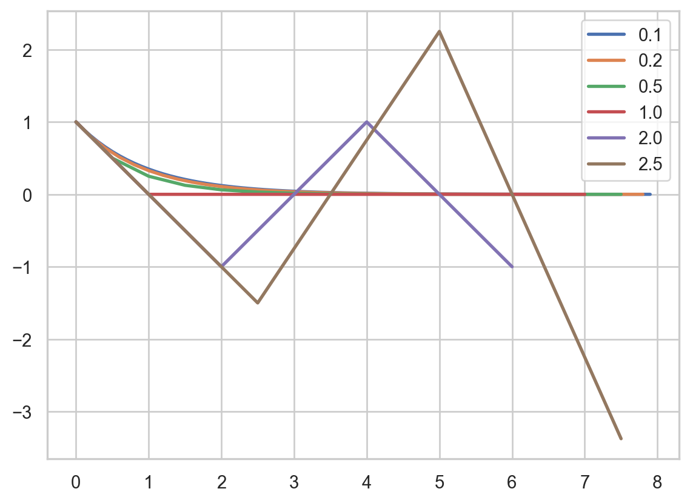
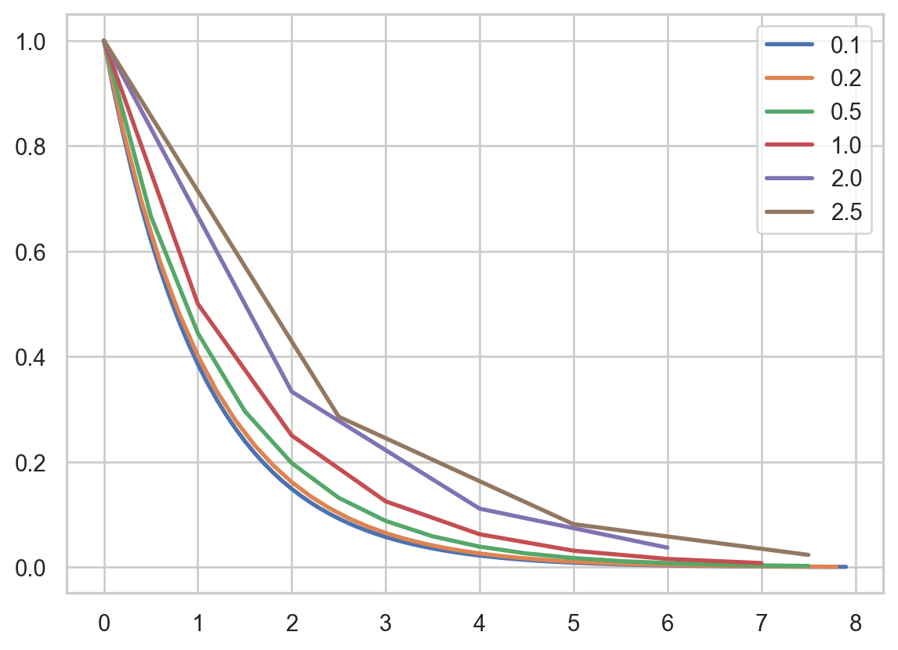
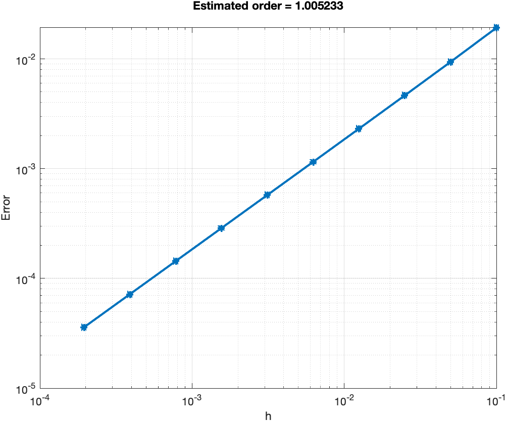
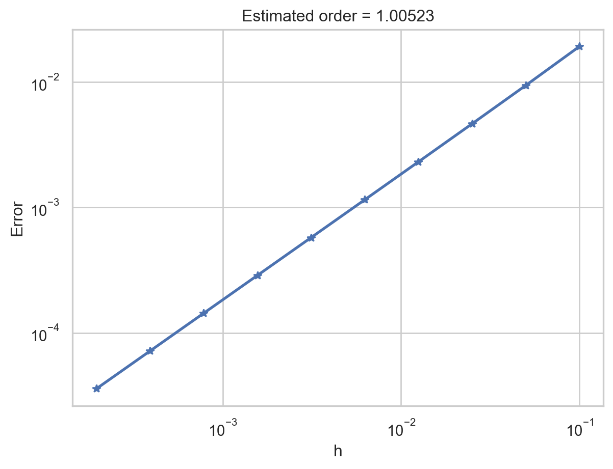
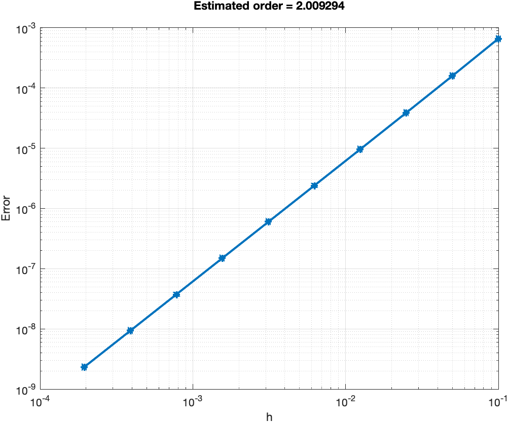
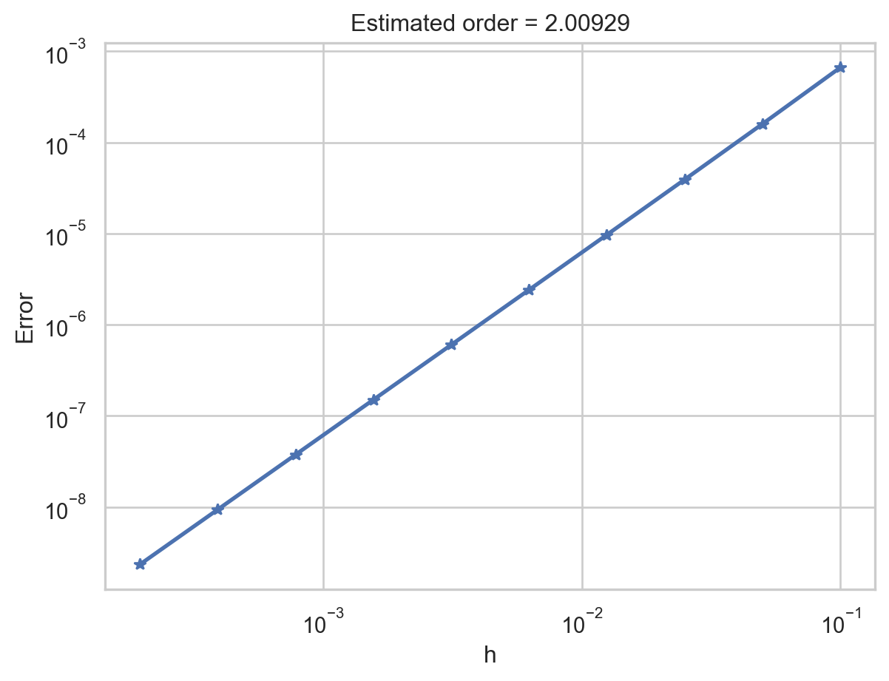
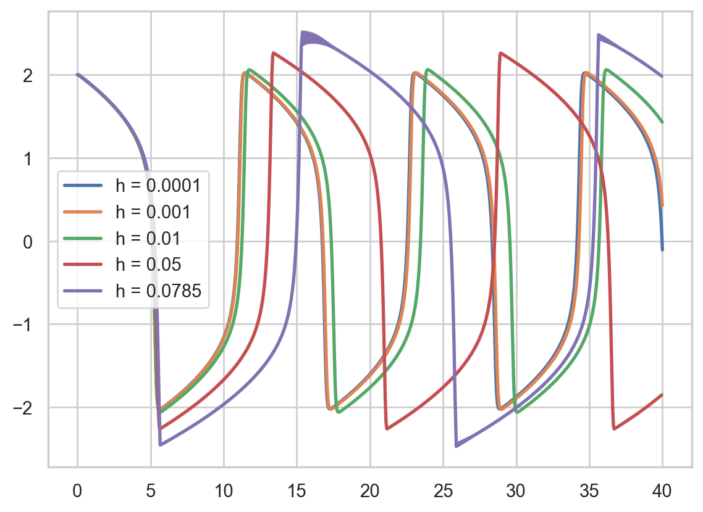
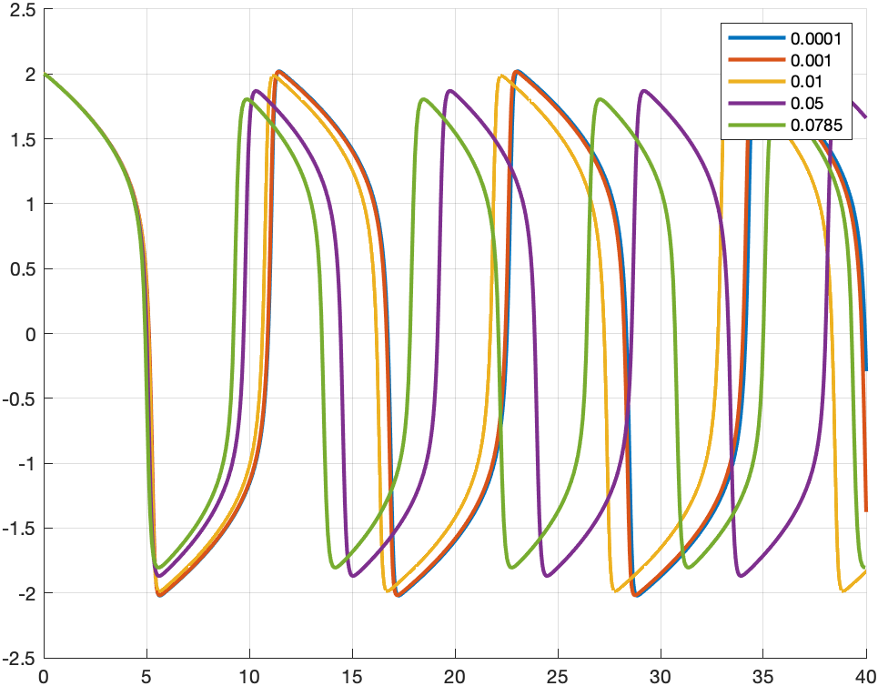
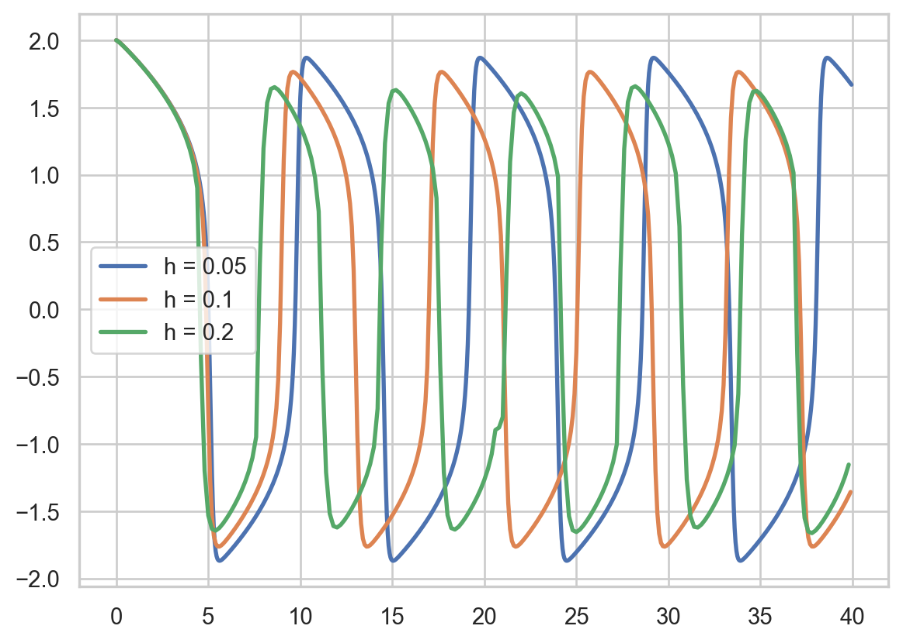
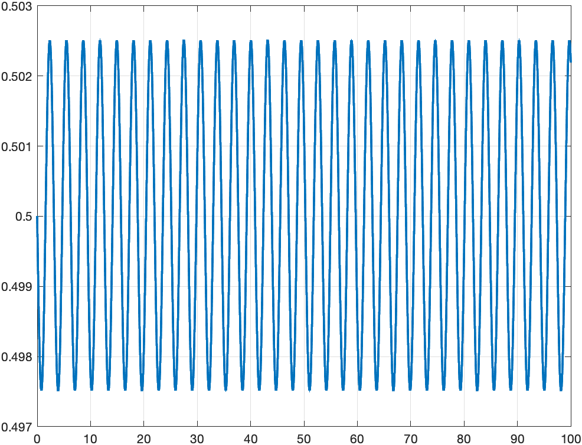

The purpose of this lab sesssion is to introduce some basic numerical schemes for the following initial value problem (IVP) \[
\begin{cases}
\mathbf{y}' = \mathbf{f}(t,\mathbf{y}), & \\
\mathbf{y}(t_0) = \mathbf{y}_0. &
\end{cases}
\]
The simplest method is Forward Euler method or Explicit Euler.
In the Forward Euler method, the numerical solution \(\mathbf{u}\) is obtained from the following algorithm: given \(h>0\) (timestep), we set \(\mathbf{u}_0 = y_0\) and we iterate for \(n\ge 0\): \[
u_{n+1} = u_{n} + h f(t_n,u_n)
\]
until \(nh > T\), being \(T\) the final time.
Alternatively to Forward Euler, we can have the following scheme, called Backward Euler: \[
u_{n+1} = u_n + h f(t_{n+1},u_{n+1}).
\]
Please note that the unknown \(u_{n+1}\) is implicitly defined. If \(f\) is nonlinear, then it might not that trivial to obtain it! In our example, the ODE is linear and the solution is easily found: \[
u_{n+1} = u_n + h \lambda u_{n+1}\qquad\Rightarrow\qquad u_{n+1} = (1-h \lambda)^{-1} u_n.
\]
In the function below we directly use \(\lambda\) and not \(f\).
Stability and convergence
Consider the IVP (in numerics, this is also called test problem): \[
\begin{cases}
y' = \lambda y, \\
y(t_0) = y_0. &
\end{cases}
\]
Write down the forward Euler scheme and solve for the equation for various values of \(h\), with \(\lambda = -1\). Is it always true that \(y_n \to 0\) for \(n\to\infty\)? Use \(t_0=0\) and \(y_0=1\).
import matplotlib.pyplot as pltimport numpy as nplmbda =-1.0f =lambda u: lmbda*uT =8u0 =1.0fig,ax = plt.subplots()for h in [0.1,0.2,0.5,1.0,2.0,2.5]: t = np.arange(0,T,h) u = np.zeros(t.shape[0]) u[0] = u0for n inrange(t.shape[0]-1): u[n+1] = u[n] + h*f(u[n]) ax.plot(t,u,lw=2.0,label=f'{h}')ax.legend()ax.grid(True)plt.show()

Solution
No, for \(h \ge2\) there is no convergence.
Write down the backward Euler scheme and repeat the previous step.
fig,ax = plt.subplots()for h in [0.1,0.2,0.5,1.0,2.0,2.5]: t = np.arange(0,T,h) u = np.zeros(t.shape[0]) u[0] = u0for n inrange(t.shape[0]-1): u[n+1] = u[n]/(1- h*lmbda) ax.plot(t,u,lw=2.0,label=f'{h}')ax.legend()ax.grid(True)plt.show()

Solution
It is always stable.
Solve the equation with the forward Euler scheme and compare the solution to the exact one. How does the absolute error decrease with respect to \(h\)? Plot the error in the logarithmic scale. Set \(\lambda=1\) and \(y(0)=1\).
lmbda=-1.0;f=@(u) lmbda*u;T=8;y0=1.0;Nh=10;h0=0.1;err=zeros(1,Nh);fork=1:Nhh=h0/(2^(k-1));% divide h by 2 every iterationt=0:h:T;u=zeros(size(t));uexact=y0*exp(lmbda*t);% we know exact solutionu(1) =y0;forn=1:length(t)-1% Forward Euleru(n+1) =u(n) +h*f(u(n));end% infinity normerr(k) =norm(u-uexact,inf);endloglog(h0./(2.^(0:Nh-1)),err,'-*','LineWidth',2.0);gridon;xlabel('h');ylabel('Error');% in loglog scale we expect a line, the slope is the orderp=polyfit((0:Nh-1)*log(2),-log(err),1);title(sprintf('Estimated order = %f\n',p(1)));

image
lmbda =-1.0f =lambda u: lmbda*uT =8y0 =1.0Nh =10h0 =0.1err = np.zeros(Nh)for k inrange(Nh): h = h0/(2**k) # divide h by 2 every iteration t = np.arange(0,T,h) u = np.zeros(t.shape[0]) uexact = y0*np.exp(lmbda*t) # we know exact solution u[0] = y0for n inrange(t.shape[0]-1):# Forward Euler u[n+1] = u[n] + h*f(u[n])# infinity norm err[k] = np.linalg.norm(u-uexact,np.inf)fig,ax = plt.subplots()ax.loglog(h0/(2**np.arange(Nh)),err,'-*',lw=2.0)ax.grid(True)ax.set_xlabel('h')ax.set_ylabel('Error')# in loglog scale we expect a line, the slope is the orderp = np.polyfit(np.arange(Nh)*np.log(2),-np.log(err),1)ax.set_title(f'Estimated order = {p[0]:g}')plt.show()

Solution
The method converges linearly.
Repeat the previous step with the Heun scheme: \[y_{n+1}=y_n + \tfrac{h}{2}\bigl( f(y_n) + f(y_n + hf(y_n)) \bigr).\]
forn=1:length(t)-1fn=f(u(n));% save, we need it twiceu(n+1) =u(n) +h/2*(fn+f(u(n) +h*fn));end

image
lmbda =-1.0f =lambda u: lmbda*uT =8y0 =1.0Nh =10h0 =0.1err = np.zeros(Nh)for k inrange(Nh): h = h0/(2**k) # divide h by 2 every iteration t = np.arange(0,T,h) u = np.zeros(t.shape[0]) uexact = y0*np.exp(lmbda*t) # we know exact solution u[0] = y0for n inrange(t.shape[0]-1):# Forward Euler fn = f(u[n]) u[n+1] = u[n] + h/2*(fn + f(u[n] + h*fn))# infinity norm err[k] = np.linalg.norm(u-uexact,np.inf)fig,ax = plt.subplots()ax.loglog(h0/(2**np.arange(Nh)),err,'-*',lw=2.0)ax.grid(True)ax.set_xlabel('h')ax.set_ylabel('Error')# in loglog scale we expect a line, the slope is the orderp = np.polyfit(np.arange(Nh)*np.log(2),-np.log(err),1)ax.set_title(f'Estimated order = {p[0]:g}')plt.show()

Solution with Heun method
Now it converges quadratically. Note that it also costs twice, as for the cost is the number of evaluations of \(f\).
Nonlinear equations
Consider the Nagumo or bistable model: \[
u' = a u (1-u)(u-\alpha),
\]
with \(\alpha=0.2\) and \(a=10\). Implement and solve the model in \(t=0,\ldots,2\) with forward Euler for \(h=10^{-3}\) and various values of \(u(0)\).
Here a more complicate example of a system. We solve the Van Der Pol equation: \[
y'' - \mu(1-y^2)y' + y = 0.
\]
Solve the van der Pol equation with forward Euler, using \(\mu=5\), \(y(0)=2\) and \(y'(0)=0\). How small \(h\) needs to be? Find the approximate stability limit by bisection.
Solution
We first need to recast the equation into a first-order system: \[
\left\{\begin{aligned}
y_1' &= y_2, \\
y_2' &= \mu (1-y_1^2)y_2 - y_1.
\end{aligned}\right.
\]
Then the implementation is as before, with: \[
\mathbf{y}^{(n+1)} = \mathbf{y}^{(n)} + h \mathbf{f}(\mathbf{y}^{(n)}), \quad
\mathbf{y} = \begin{bmatrix} y_1 \\ y_2 \end{bmatrix}, \quad
\mathbf{f}(\mathbf{y}) = \begin{bmatrix} y_2 \\ \mu (1-y_1^2)y_2 - y_1 \end{bmatrix}.
\]
mu =5.0f =lambda y: np.array([y[1], mu*(1-y[0]**2)*y[1]-y[0]])T =40y0 = [2.0,0.0]fig,ax = plt.subplots()for h in [1e-4,1e-3,1e-2,5e-2,7.85e-2]: t = np.arange(0,T,h) y = np.zeros((t.shape[0],2)) y[0,:] = y0for n inrange(t.shape[0]-1): y[n+1,:] = y[n,:] + h*f(y[n,:]) ax.plot(t,y[:,0],lw=2.0,label=f'h = {h}')ax.grid(True)ax.legend()plt.show()

Beyound \(h \approx 0.0785\) (found by hand) the system becomes unstable during the rapid upstroke phase (that’s the steepest part). Please note how the accuracy is significantly reduced as \(h\) decreases, in particular with a phase shift.
Solve the van der Pol equation with backward Euler. Design a strategy to solve the non-linear equation. Is the scheme always stable?
Solution
We need to solve the following non-linear problem \[
\mathbf{y}^{(n+1)} = \mathbf{y}^{(n)} + h \mathbf{f}(\mathbf{y}^{(n+1)}),
\]
in the unknown \(\mathbf{y}^{(n+1)}\). We define the residual function: \[
\mathbf{r}(\mathbf{z}) \coloneqq \mathbf{z} - \mathbf{y}^{(n)} - h \mathbf{f}(\mathbf{z}),
\]
so that the above problem is to find \(\mathbf{y}^{(n+1)}\) such that \(\mathbf{r}(\mathbf{y}^{(n+1)})=0\).
We implement the Newton’s method to solve the residual equation: starting from \(\mathbf{z}^{(0)} = \mathbf{y}^{(n)}\), \[
\mathbf{z}^{(k+1)} = \mathbf{z}^{(k)} - \mathbf{J}^{-1}(\mathbf{z}^{(k)}) \mathbf{f}(\mathbf{z}^{(k)}),
\]
until \(\|\mathbf{z}^{(k)}\| < \text{tol}\), and then we set \(\mathbf{y}^{(n+1)} = \mathbf{z}^{(k)}\).
The Jacobian is: \[
\mathbf{J}(\mathbf{z}) = \mathbf{I} + h \frac{\partial\mathbf{f}}{\partial\mathbf{z}}.
\]
Since implicit Euler is more stable, we can use larger time steps.
mu=5.0;f=@(y) [y(2);mu*(1-y(1).^2).*y(2)-y(1)];J=@(y) [0,1;-2*mu*y(1).*y(2)-1,mu*(1-y(1).^2)];T=40;y0= [2.0,0.0];kmax=20;tol=1e-10;fig=figure;holdon;forh= [1e-4,1e-3,1e-2,5e-2,7.85e-2]t=0:h:T;y=zeros(length(t),2);y(1,:) =y0;forn=1:length(t)-1% we apply Newton's iterations% initial guessy(n+1,:) =y(n,:);fork=1:kmax% residual, we want y such that r(y)=0r=-y(n+1,:) +y(n,:) +h*f(y(n+1,:))';% Jacobian dr/dyA=-eye(2) +h*J(y(n+1,:));% correctiondy=-A\r';y(n+1,:) =y(n+1,:) +dy';% stopping conditionifnorm(dy) <tol,break,endendendplot(t,y(:,1),'LineWidth',2.0,'DisplayName',num2str(h));endholdoff;gridon;legend;

image
mu =5.0f =lambda y: np.array([y[1], mu*(1-y[0]**2)*y[1]-y[0]])J =lambda y: np.array([[0,1],[-2*mu*y[0]*y[1]-1, mu*(1-y[0]**2)]])T =40y0 = [2.0,0.0]kmax =20tol =1e-10fig,ax = plt.subplots()for h in [5e-2,1e-1,2e-1]: t = np.arange(0,T,h) y = np.zeros((t.shape[0],2)) y[0,:] = y0for n inrange(t.shape[0]-1):# we apply Newton's iterations# initial guess y[n+1,:] = y[n,:]for k inrange(kmax):# residual, we want y such that r(y)=0 r =- y[n+1,:] + y[n,:] + h*f(y[n+1,:])# Jacobian dr/dy A =-np.eye(2) + h*J(y[n+1,:])# correction dy = np.linalg.solve(-A, r) y[n+1,:] += dy# stopping conditionif np.linalg.norm(dy) < tol: break ax.plot(t,y[:,0],lw=2.0,label=f'h = {h}')ax.grid(True)ax.legend()plt.show()

Now it is always stable, but the computational cost is higher.
Conservation of energy
Consider the 2nd-order ODE \(y'' + \omega^2 y = 0\) (linear oscillator).
After recasting the equation to a first-order system, solve it with forward Euler using \(\omega = 1\), \(h=0.01\), \(y(0)=1\), \(y'(0)=0\) and \(t=0,\ldots,100\). Does the solution match the expected behavior?
Solution
The system is as follows: \[
\mathbf{y}' = \mathbf{A}\mathbf{y},\quad \mathbf{A}=\left[ \begin{matrix} 0 & 1 \\ -\omega^2 & 0 \end{matrix} \right].
\]
and we see that it increases in forward Euler and decreases in backward Euler.
Implement the following strategy: first, update the velocity, then the position with the newly compute velocity. (This is called the symplectic Euler method.) Does the method conserve the (discrete) energy?
omega=1;T=100;u0= [1;0];h=0.01;t=0:h:T;u=zeros(2,length(t));u(:,1) =u0;forn=1:length(t)-1% new velocityu(2,n+1) =u(2,n) -h*omega^2*u(1,n);% new positionu(1,n+1) =u(1,n) +h*u(2,n+1);endE=0.5*(u(2,:).^2+omega*u(1,:).^2);plot(t,E,'LineWidth',2.0);gridon;holdon;

image
u[:,0] = u0for n inrange(t.shape[0]-1):# new velocity u[1,n+1] = u[1,n] - h*omega**2*u[0,n]# new position u[0,n+1] = u[0,n] + h*u[1,n+1]plt.plot(t,u.T)plt.grid(True)plt.legend(["$y$","$y'$"])